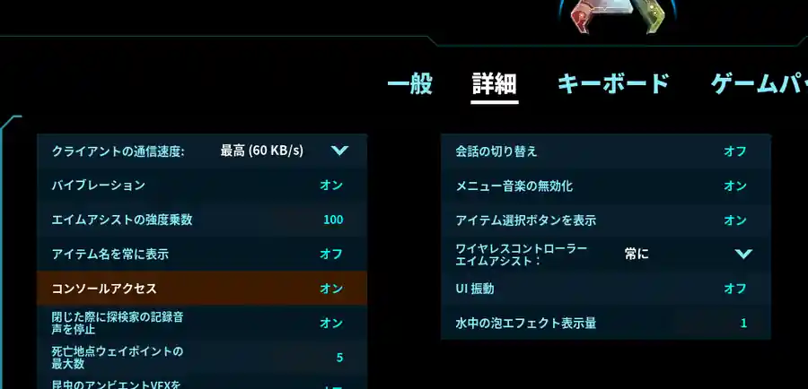
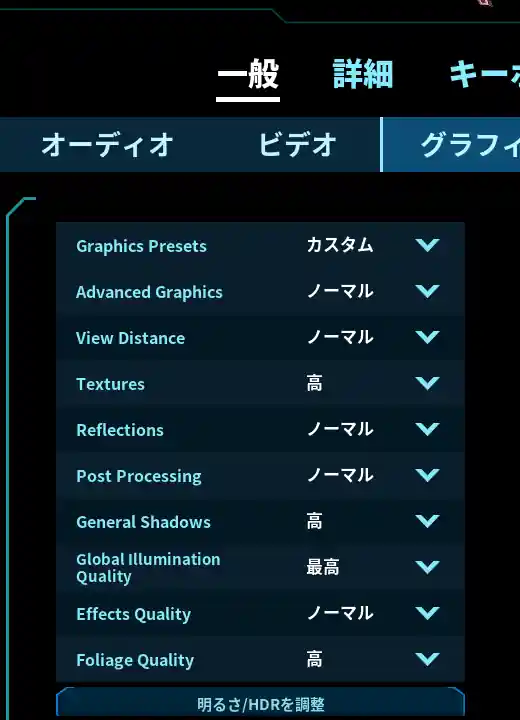
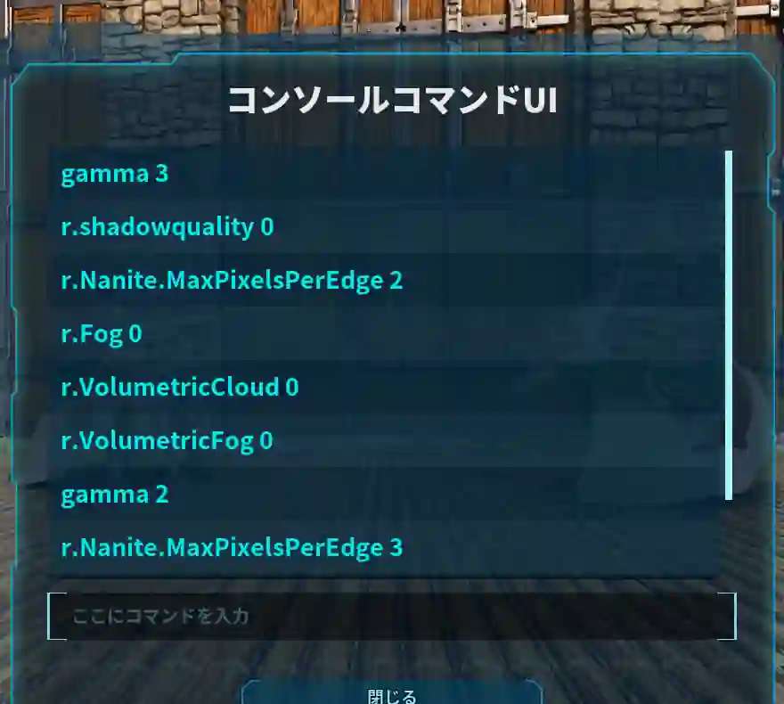

ASA / Performance & Visibility
軽くする・見やすくする
雲や霧を減らす軽量化から、形状の細かさ・影の調整、暗い場所の明るさ調整まで。1つずつ試して、見た目とFPSのバランスを選びます。
自分の画面の描画設定管理者コマンド不要草OFFは最終手段
START HERE
コンソールを開いて実行する
最初にコンソールアクセスを有効にします。
01
ESC → 設定 → 詳細
「コンソールアクセス」をON
02
割り当てキーで開く
キーボード設定の「コンソールの切り替え」を確認
03
コマンドを入力
このページでコピーして、下の入力欄に貼り付ける
04
Enterで実行
見た目とFPSの変化を確認する



履歴から使う場合： コマンドを選ぶ → 下の入力欄をクリック → Enter。履歴に残っていることと、設定が今も適用されていることは別です。
01 / FIRST TRY
まずは雲・霧をOFF
同じ場所で1つずつ試し、FPSと景色を見比べます。
雲をOFF
立体的な雲の描画を無効にします。空の雰囲気は変わりますが、最初に試す軽量化候補です。
r.VolumetricCloud 0再び有効にする：
r.VolumetricCloud 1最初に試す
立体的な霧をOFF
光の散乱などを表現するボリューメトリックフォグを無効にします。霧や光の雰囲気が変わります。
r.VolumetricFog 0再び有効にする：
r.VolumetricFog 1最初に試す
02 / MORE OPTIONS
まだ重いときの追加調整
全部を入れる必要はありません。好みの景色を保てるものだけ使います。
水面反射をOFF
水面の反射表現を無効にします。水辺で見た目とFPSを比較してください。
r.Water.SingleLayer.Reflection 0再び有効にする：
r.Water.SingleLayer.Reflection 1追加調整
Naniteの形状を少し粗くする
Naniteで描かれる物体の形状の細かさを調整します。テクスチャ解像度の設定ではありません。数値が大きいほど詳細度が下がる方向で、負荷を減らせる可能性があります。まず2、さらに試すなら3。元の値によっては2にしても軽量化にならないため、変更前の値を確認してください。
r.Nanite.MaxPixelsPerEdge 2r.Nanite.MaxPixelsPerEdge 32と3はどちらか一方を使用。戻すときは変更前の値に設定します。UEの標準値とASAでの設定値は同じとは限りません。
追加調整
霧の描画をOFF
r.Fogは霧の描画を制御する設定です。上のVolumetricFogとは別のスイッチで、遠景のかすみなどの見え方が変わります。霧をさらに減らしたいときの候補です。両方をOFFにしても効果が倍になるわけではありません。
r.Fog 0再び有効にする：
r.Fog 1視界も変化
影をOFF
影の描画を無効にします。描画負荷を減らせる可能性がありますが、物体の立体感や地面との接地感が薄くなります。
r.ShadowQuality 0戻すときは変更前の値に設定するか、ゲーム内の影の画質設定を調整します。
1は低品質であり、元の画質への復元とは限りません。見た目の変化 大
草をOFF — 最終手段
草などの植生表示を無効にします。かなり殺風景になるため、ほかの調整でも重い場合だけ試してください。
grass.Enable 0再び有効にする：
grass.Enable 1最終手段
03 / BRIGHTNESS
暗いときは明るさを調整
gammaは見やすさのための設定です。FPSを上げる目的では使いません。
BRIGHTER
明るさを3にする
暗い場所を見やすくする候補。明るい場所では白っぽく感じることがあります。
gamma 3LESS BRIGHT
明るさを2にする
3より暗い表示にします。「初期値に戻す」コマンドではありません。
gamma 22と3は切り替えて使います。 続けて実行すると最後の値が適用されます。元の明るさに戻したいときは、変更前のガンマ値を使ってください。
04 / CHECK & RESTORE
FPSを確認して、必要な設定だけ残す
効果はPC構成・場所・ゲームのバージョンによって変わります。
FPSを表示する
同じ場所・同じ視点で変更前後を比較します。もう一度実行すると表示を切り替えられます。
stat fps変更前の値を控える
描画設定は値を付けずに入力すると、通常は現在値を確認できます。特にNaniteと影は元の値を控えてから変更します。
r.Nanite.MaxPixelsPerEdger.ShadowQuality試す順番： 雲・立体的な霧 → 水面反射やNanite → 必要なら霧・影 → それでも重ければ草。暗さが気になる場合はgammaを別に調整します。
再起動・再接続後は適用状態を確認。 コマンドの設定は永続保存されるとは限らず、画質設定の変更で上書きされる場合もあります。履歴が残っていても、必要な設定が戻っていたら再実行してください。コマンドが効かない場合はゲームのバージョンや通常の画質設定も確認します。
描画設定の定義：Unreal Engine公式リファレンス ／ Epic Games JapanのNanite解説。エンジン上の定義であり、ASAでの効果や初期値を保証するものではありません。